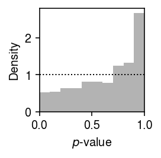
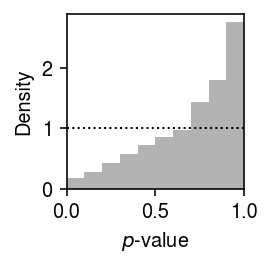
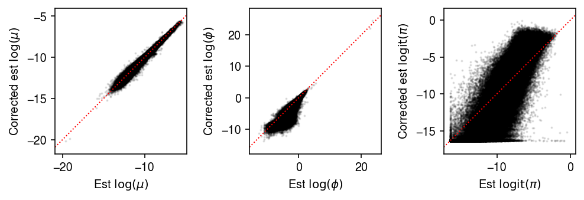
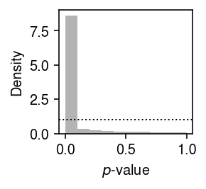

Massively Parallel Empirical Bayes Poisson Means
Table of Contents
Introduction
The Empirical Bayes Poisson Means (EBPM) problem is \( \DeclareMathOperator\Gam{Gamma} \DeclareMathOperator\Poi{Poisson} \DeclareMathOperator\argmin{arg min} \newcommand\mf{\mathbf{F}} \newcommand\ml{\mathbf{L}} \newcommand\mx{\mathbf{X}} \newcommand\vl{\mathbf{l}} \newcommand\vx{\mathbf{x}} \)
\begin{align*} x_i \mid s_i, \lambda_i &\sim \Poi(s_i \lambda_i)\\ \lambda_i &\sim g(\cdot) \in \mathcal{G}, \end{align*}where the (primary) inference goal is to estimate \(g\) by maximizing the likelihood. In our prior work (Sarkar et al. 2019), we used this approach to estimate the mean and variance of gene expression from scRNA-seq data collected on a homogeneous sample of cells from each of a number of donor individuals, where we assumed \(\mathcal{G}\) was the family of point-Gamma distributions. In total, we solved 537,678 EBPM problems in parallel by formulating them as a single factor model
\begin{align*} x_{ij} \mid x_{i+}, \lambda_{ij} &\sim \Poi(x_{i+} \lambda_{ij})\\ \lambda_{ij} \mid \mu_{ij}, \phi_{ij}, \pi_{ij} &\sim \pi_{ij} \delta_0(\cdot) + (1 - \pi_{ij}) \Gam(\phi_{ij}^{-1}, \mu_{ij}^{-1} \phi_{ij}^{-1})\\ \ln \mu_{ij} &= (\ml \mf_\mu')_{ij}\\ \ln \phi_{ij} &= (\ml \mf_\phi')_{ij}\\ \operatorname{logit} \pi_{ij} &= (\ml \mf_\pi')_{ij}, \end{align*}where
- \(x_{ij}\) is the number of molecules of gene \(j = 1, \ldots, p\) observed in cell \(i = 1, \ldots, n\)
- \(x_{i+} \triangleq \sum_j x_{ij}\) is the total number of molecules observed in sample \(i\)
- cells are taken from \(m\) donor individuals, \(\ml\) is \(n \times m\), and each \(\mf_{(\cdot)}\) is \(p \times m\)
- assignments of cells to donors (loadings) \(l_{ik} \in \{0, 1\}, k = 1, \ldots, m\) are known and fixed.
We previously implemented maximum likelihood inference of this model via batch gradient descent in the Python package scqtl. We have now developed a new Python package mpebpm, which scales to much larger data sets. The key improvements are optimization using minibatch gradient descent and support for sparse matrices. Here, we evaluate the method on simulations and large biological data sets.
Setup
Submitted batch job 1033114
import anndata import mpebpm import numpy as np import pandas as pd import scipy.sparse as ss import scipy.special as sp import scipy.stats as st import scmodes import scqtl import time
import gzip import rpy2.robjects.pandas2ri import rpy2.robjects.packages import tabix rpy2.robjects.pandas2ri.activate() susie = rpy2.robjects.packages.importr('susieR')
%matplotlib inline %config InlineBackend.figure_formats = set(['retina'])
import matplotlib.pyplot as plt plt.rcParams['figure.facecolor'] = 'w' plt.rcParams['font.family'] = 'Nimbus Sans'
Results
Accuracy of parameter estimation
We previously evaluated scqtl
by
simulating data from the model.
def evaluate(num_samples, num_mols, num_trials=10, **kwargs): # Important: generate all of the samples for each trial in one shot, and use # one-hot encoding to get separate estimates args = [(num_samples * num_trials, num_mols, log_mu, log_phi, logodds, None, None, None) for log_mu in np.linspace(-12, -6, 7) for log_phi in np.linspace(-4, 0, 5) for logodds in np.linspace(-3, 3, 7)] x = np.concatenate([scqtl.simulation.simulate(*a)[0][:,:1] for a in args], axis=1) x = ss.csr_matrix(x) s = num_mols * np.ones((x.shape[0], 1)) onehot = np.zeros((num_samples * num_trials, num_trials)) onehot[np.arange(onehot.shape[0]), np.arange(onehot.shape[0]) // num_samples] = 1 onehot = ss.csr_matrix(onehot) log_mu, neg_log_phi, logodds, _ = mpebpm.ebpm_point_gamma(x, s=s, onehot=onehot, **kwargs) result = pd.DataFrame( [(a[0] // num_trials, int(a[1]), int(a[2]), int(a[3]), int(a[4]), a[-1], trial) for a in args for trial in range(num_trials)], columns=['num_samples', 'num_mols', 'log_mu', 'log_phi', 'logodds', 'fold', 'trial']) result['mean'] = np.exp(result['log_mu']) result['var'] = (1 - sp.expit(result['logodds'])) * np.exp(2 * result['log_mu'] + result['log_phi']) + sp.expit(-result['logodds']) * (1 - sp.expit(result['logodds'])) * np.exp(2 * result['log_mu']) result['log_mu_hat'] = log_mu.ravel(order='F') result['log_phi_hat'] = -neg_log_phi.ravel(order='F') result['logodds_hat'] = logodds.ravel(order='F') result['mean_hat'] = np.exp(result['log_mu_hat']) result['var_hat'] = (1 - sp.expit(result['logodds_hat'])) * np.exp(2 * result['log_mu_hat'] + result['log_phi_hat']) + sp.expit(-result['logodds_hat']) * (1 - sp.expit(result['logodds_hat'])) * np.exp(2 * result['log_mu_hat']) diagnostic = [] for i in range(x.shape[1]): for j in range(onehot.shape[1]): idx = onehot.A[:,j].astype(bool) diagnostic.append(scqtl.diagnostic.diagnostic_test( x.A[idx,i].reshape(-1, 1), log_mu[j,i], -neg_log_phi[j,i], -logodds[j,i], num_mols, np.ones((num_samples, 1)))) diagnostic = np.array(diagnostic) result['ks_d'] = diagnostic[:,0] result['ks_p'] = diagnostic[:,1] return result
Run the simulation.
result = evaluate(num_samples=100, num_mols=int(1e5), batch_size=32, max_epochs=200, verbose=True) result.to_csv('/scratch/midway2/aksarkar/ideas/mpebpm-sim.txt.gz', sep='\t')
Read the results.
result = pd.read_csv('/scratch/midway2/aksarkar/ideas/mpebpm-sim.txt.gz', sep='\t', index_col=0)
Plot the estimated values against the ground truth values.
mu_pass = result['log_mu'] > -10 pi_pass = result['logodds'] < 0 plt.clf() fig, ax = plt.subplots(2, 3) fig.set_size_inches(8, 5) subset = result.loc[pi_pass] ax[0, 0].scatter(subset['log_mu'], subset['log_mu_hat'], s=2, c='k') ax[0, 0].set_xlim(-14, -5) ax[0, 0].set_ylim(ax[0, 0].get_xlim()) ax[0, 0].plot(ax[0, 0].get_xlim(), ax[0, 0].get_xlim(), c='r', ls=':', lw=1) ax[0, 0].set_xlabel('True $\ln(\mu)$') ax[0, 0].set_ylabel('Estimated $\ln(\mu)$') ax[1, 0].set_xscale('log') ax[1, 0].set_yscale('log') ax[1, 0].scatter(subset['mean'], subset['mean_hat'], s=2, c='k') ax[1, 0].set_xlim(1e-6, 1e-2) ax[1, 0].set_ylim(ax[1, 0].get_xlim()) ax[1, 0].plot(ax[1, 0].get_xlim(), ax[1, 0].get_xlim(), c='r', ls=':', lw=1) ax[1, 0].set_xlabel('True latent mean') ax[1, 0].set_ylabel('Estimated latent mean') subset = result.loc[np.logical_and.reduce(np.vstack([mu_pass, pi_pass]))] ax[0, 1].scatter(subset['log_phi'], subset['log_phi_hat'], s=2, c='k') ax[0, 1].set_xlim(-5, 2) ax[0, 1].set_ylim(ax[0, 1].get_xlim()) ax[0, 1].plot(ax[0, 1].get_xlim(), ax[0, 1].get_xlim(), c='r', ls=':', lw=1) ax[0, 1].set_xlabel('True $\ln(\phi)$') ax[0, 1].set_ylabel('Estimated $\ln(\phi)$') ax[1, 1].set_xscale('log') ax[1, 1].set_yscale('log') ax[1, 1].scatter(subset['var'], subset['var_hat'], s=2, c='k') ax[1, 1].set_xlim(1e-9, 5e-5) ax[1, 1].set_ylim(ax[1, 1].get_xlim()) ax[1, 1].plot(ax[1, 1].get_xlim(), ax[1, 1].get_xlim(), c='r', ls=':', lw=1) ax[1, 1].set_xlabel('True latent variance') ax[1, 1].set_ylabel('Estimated latent variance') subset = result.loc[pi_pass] ax[0, 2].scatter(subset['logodds'], subset['logodds_hat'], s=2, c='k') ax[0, 2].plot(ax[0, 2].get_xlim(), ax[0, 2].get_xlim(), c='r', ls=':', lw=1) ax[0, 2].set_xlabel('True $\mathrm{logit}(\pi)$') ax[0, 2].set_ylabel('Estimated $\mathrm{logit}(\pi)$') ax[1, 2].set_axis_off() fig.tight_layout()

Goodness of fit
We previously developed a test for goodness of fit, based on the fact that if \(x_{ij} \sim F_{ij}\), then \(F_{ij}(x_{ij}) \sim \operatorname{Uniform}(0, 1)\). We applied this test to the distributions estimated from the simulated data sets. Plot the histogram of goodness-of-fit \(p\)-values.
plt.clf() plt.gcf().set_size_inches(2, 2) plt.hist(result['ks_p'], bins=np.linspace(0, 1, 11), density=True, color='0.7') plt.axhline(y=1, lw=1, ls=':', c='k') plt.xlim(0, 1) plt.xlabel('$p$-value') plt.ylabel('Density') plt.tight_layout()

Report the number (proportion) of simulation trials where the observed data significantly depart from the estimated distribution (\(p < 0.05\) after Bonferroni correction).
sig = result.loc[result['ks_p'] < 0.05 / result.shape[0]] sig.shape[0], sig.shape[0] / result.shape[0]
(0, 0.0)
Application to iPSCs
We previously generated scRNA-seq of 5,597 cells from 54 donors (Sarkar et al. 2019). Read the data.
x = anndata.read_h5ad('/project2/mstephens/aksarkar/projects/singlecell-ideas/data/ipsc/ipsc.h5ad') x.X
<5597x9957 sparse matrix of type '<class 'numpy.float32'>' with 39654337 stored elements in Compressed Sparse Row format>
Prepare the data.
# Important: the dense data will fit on the GPU y = x.X.A s = x.obs['mol_hs'].values.reshape(-1, 1) onehot = ss.coo_matrix((np.ones(x.shape[0]), (np.arange(x.shape[0]), pd.Categorical(x.obs['chip_id']).codes))).tocsr() # Important: center the matrix of dummy variables (batch), because there is no # baseline design = ss.coo_matrix(pd.get_dummies(x.obs['experiment'])).astype(float).A design -= design.mean(axis=0)
Fit mpebpm, and report the time elapsed in minutes.
start = time.time() log_mu, neg_log_phi, logodds = mpebpm.ebpm_point_gamma( y, s=s, onehot=onehot, batch_size=64, lr=1e-2, max_epochs=80, verbose=True) elapsed = time.time() - start np.save('/scratch/midway2/aksarkar/ideas/mpebpm-ipsc-log-mu', log_mu) np.save('/scratch/midway2/aksarkar/ideas/mpebpm-ipsc-neg-log-phi', neg_log_phi) np.save('/scratch/midway2/aksarkar/ideas/mpebpm-ipsc-logodds', logodds) elapsed / 60
4.786360724767049
For comparison, this analysis previously required 395 minutes using
scqtl. Estimate the full data log likelihood.
log_mu = np.load('/scratch/midway2/aksarkar/ideas/mpebpm-ipsc-log-mu.npy') neg_log_phi = np.load('/scratch/midway2/aksarkar/ideas/mpebpm-ipsc-neg-log-phi.npy') logodds = np.load('/scratch/midway2/aksarkar/ideas/mpebpm-ipsc-logodds.npy')
mean = s.ravel() * onehot @ np.exp(log_mu) inv_disp = onehot @ np.exp(neg_log_phi) nb_llik = (y * np.log(mean / inv_disp) - y * np.log(1 + mean / inv_disp) - inv_disp * np.log(1 + mean / inv_disp) # Important: these terms are why we use inverse dispersion + sp.gammaln(y + inv_disp) - sp.gammaln(inv_disp) - sp.gammaln(y + 1)) case_zero = -np.log1p(np.exp(onehot @ -logodds)) + np.log1p(np.exp(nb_llik - (onehot @ logodds))) case_non_zero = -np.log1p(np.exp(onehot @ logodds)) + nb_llik np.where(y < 1, case_zero, case_non_zero).mean()
-128.0825405344857
Read the previously estimated parameters, and estimate the full data log likelihood.
log_mu0 = pd.read_table("/project2/mstephens/aksarkar/projects/singlecell-qtl/data/density-estimation/design0/zi2-log-mu.txt.gz", index_col=0, sep=' ') log_phi0 = pd.read_table("/project2/mstephens/aksarkar/projects/singlecell-qtl/data/density-estimation/design0/zi2-log-phi.txt.gz", index_col=0, sep=' ') logodds0 = pd.read_table("/project2/mstephens/aksarkar/projects/singlecell-qtl/data/density-estimation/design0/zi2-logodds.txt.gz", index_col=0, sep=' ')
mean0 = s.ravel() * onehot @ np.exp(log_mu0.values.T) inv_disp0 = onehot @ np.exp(-log_phi0.values.T) nb_llik = (y * np.log(mean0 / inv_disp0) - y * np.log(1 + mean0 / inv_disp0) - inv_disp0 * np.log(1 + mean0 / inv_disp0) # Important: these terms are why we use inverse disp0ersion + sp.gammaln(y + inv_disp0) - sp.gammaln(inv_disp0) - sp.gammaln(y + 1)) case_zero = -np.log1p(np.exp(onehot @ -logodds0.values.T)) + np.log1p(np.exp(nb_llik - (onehot @ logodds0.values.T))) case_non_zero = -np.log1p(np.exp(onehot @ logodds0.values.T)) + nb_llik np.where(y < 1, case_zero, case_non_zero).mean()
-248.24867762696132
Plot the fitted values of the two methods against each other.
plt.clf() fig, ax = plt.subplots(1, 3) fig.set_size_inches(7, 2.5) ax[0].scatter(log_mu.ravel(order='F'), log_mu0.values.ravel(), s=1, c='k', alpha=0.1) ax[0].set_xlim(ax[0].get_ylim()) ax[0].plot(ax[0].get_xlim(), ax[0].get_ylim(), lw=1, ls=':', c='r') ax[0].set_xlabel('MPEBPM est $\log(\mu)$') ax[0].set_ylabel('scqtl est $\log(\mu)$') ax[1].scatter(-neg_log_phi.ravel(order='F'), log_phi0.values.ravel(), s=1, c='k', alpha=0.1) ax[1].set_xlim(ax[1].get_ylim()) ax[1].plot(ax[1].get_xlim(), ax[1].get_ylim(), lw=1, ls=':', c='r') ax[1].set_xlabel('MPEBPM est $\log(\phi)$') ax[1].set_ylabel('scqtl est $\log(\phi)$') ax[2].scatter(logodds.ravel(order='F'), logodds0.values.ravel(), s=1, c='k', alpha=0.1) ax[2].set_xlim(ax[2].get_ylim()) ax[2].plot(ax[2].get_xlim(), ax[2].get_ylim(), lw=1, ls=':', c='r') ax[2].set_xlabel('MPEBPM est $\mathrm{logit}(\pi)$') ax[2].set_ylabel('scqtl est $\mathrm{logit}(\pi)$') fig.tight_layout()
Test each individual-gene combination for goodness-of-fit to the
mpebpm-estimated distribution.
result = dict() for j in range(x.shape[1]): for k, donor in enumerate(pd.Categorical(x.obs['chip_id']).categories): idx = onehot[:,k].A.ravel().astype(bool) d, p = scqtl.diagnostic.diagnostic_test( x.X[idx,j].A, log_mu[k,j], -neg_log_phi[k,j], -logodds[k,j], s[idx], np.ones((int(idx.sum()), 1)), n_samples=1) result[(donor, x.var.iloc[j].name)] = pd.Series({'stat': d, 'p': p}) result = pd.DataFrame.from_dict(result, orient='index') result.index.names = ['donor', 'gene'] result = result.reset_index()
Write out the GOF tests.
result.to_csv('/scratch/midway2/aksarkar/ideas/mpebpm-ipsc-gof.txt.gz', sep='\t')
Plot the histogram of GOF \(p\)-values.
plt.clf() plt.gcf().set_size_inches(2, 2) plt.hist(result['p'], bins=np.linspace(0, 1, 11), color='0.7', density=True) plt.axhline(y=1, lw=1, ls=':', c='k') plt.xlim(0, 1) plt.xlabel('$p$-value') plt.ylabel('Density') plt.tight_layout()

Report how many individual-gene combinations (proportion) depart significantly from the estimated distribution.
sig = result.loc[result['p'] < 0.05 / result.shape[0]] sig.shape[0], sig.shape[0] / result.shape[0]
(64, 0.00011903034901930151)
Look at one of the examples where the data depart from the estimated distribution.
plt.clf() fig, ax = plt.subplots(2, 1) fig.set_size_inches(6, 4) query = x[x.obs['chip_id'] == sig.iloc[0]['donor'], x.var.index == sig.iloc[0]['gene']].X.A.ravel() ax[0].hist(query, bins=np.arange(query.max() + 1), color='k') ax[0].set_xlabel('Number of molecules') ax[0].set_ylabel('Number of cells') ax[0].set_title(x.var.loc[sig.iloc[0]['gene'], 'name']) grid = np.linspace(0, 1e-3, 1000) j = list(x.var.index).index(sig.iloc[0]['gene']) k = list(pd.Categorical(x.obs['chip_id']).categories).index(sig.iloc[0]['donor']) ax[1].plot(grid, st.gamma(a=np.exp(neg_log_phi[k,j]), scale=np.exp(log_mu[k,j] - neg_log_phi[k,j])).cdf(grid), c='k', lw=1) ax[1].set_xlabel('Latent gene expression') ax[1].set_ylabel('CDF') fig.tight_layout()
Report all genes at which the data depart from the estimated distribution for at least one individual.
x.var.merge(sig, left_index=True, right_on='gene', how='inner')['name'].unique()
array(['NUP98', 'ANXA5', 'RPL27A', 'RHOG', 'MT-CO2', 'MT-ND4', 'MT-CO3', 'MT-ND4L', 'MT-ATP8'], dtype=object)
Confounder correction in iPSC data
Repeat the analysis, including batch as a covariate.
start = time.time() log_mu1, neg_log_phi1, logodds1, bhat1 = mpebpm.sgd.ebpm_point_gamma( y, s=s, onehot=onehot, design=design, batch_size=64, lr=1e-2, max_epochs=100, verbose=True) elapsed = time.time() - start np.save('/scratch/midway2/aksarkar/ideas/mpebpm-ipsc-design-log-mu', log_mu) np.save('/scratch/midway2/aksarkar/ideas/mpebpm-ipsc-design-neg-log-phi', neg_log_phi) np.save('/scratch/midway2/aksarkar/ideas/mpebpm-ipsc-design-logodds', logodds) np.save('/scratch/midway2/aksarkar/ideas/mpebpm-ipsc-design-bhat', bhat) elapsed / 60
3.198907784620921
Read the mpebpm and scqtl estimates.
log_mu1 = np.load('/scratch/midway2/aksarkar/ideas/mpebpm-ipsc-design-log-mu.npy') neg_log_phi1 = np.load('/scratch/midway2/aksarkar/ideas/mpebpm-ipsc-design-neg-log-phi.npy') logodds1 = np.load('/scratch/midway2/aksarkar/ideas/mpebpm-ipsc-design-logodds.npy') bhat1 = np.load('/scratch/midway2/aksarkar/ideas/mpebpm-ipsc-design-bhat.npy') log_mu2 = pd.read_table('/project2/mstephens/aksarkar/projects/singlecell-qtl/data/density-estimation/design1/zi2-log-mu.txt.gz', index_col=0, sep=' ') log_phi2 = pd.read_table('/project2/mstephens/aksarkar/projects/singlecell-qtl/data/density-estimation/design1/zi2-log-phi.txt.gz', index_col=0, sep=' ') logodds2 = pd.read_table('/project2/mstephens/aksarkar/projects/singlecell-qtl/data/density-estimation/design1/zi2-logodds.txt.gz', index_col=0, sep=' ') bhat2 = pd.read_table('/project2/mstephens/aksarkar/projects/singlecell-qtl/data/density-estimation/design1/beta.txt.gz', index_col=0, sep=' ')
Compute the full data log likelihood at the mpebpm solution.
mean = s.ravel() * onehot @ np.exp(log_mu1) * np.exp(design @ bhat1) inv_disp = onehot @ np.exp(neg_log_phi1) nb_llik = (y * np.log(mean / inv_disp) - y * np.log(1 + mean / inv_disp) - inv_disp * np.log(1 + mean / inv_disp) # Important: these terms are why we use inverse dispersion + sp.gammaln(y + inv_disp) - sp.gammaln(inv_disp) - sp.gammaln(y + 1)) case_zero = -np.log1p(np.exp(onehot @ -logodds1)) + np.log1p(np.exp(nb_llik - (onehot @ logodds1))) case_non_zero = -np.log1p(np.exp(onehot @ logodds1)) + nb_llik np.where(y < 1, case_zero, case_non_zero).mean()
-222.59761148808386
Compute the full data log likelihood at the scqtl solution.
mean = s.ravel() * onehot @ np.exp(log_mu2.values.T) * np.exp(design @ bhat2.values.T) inv_disp = onehot @ np.exp(-log_phi2.values.T) nb_llik = (y * np.log(mean / inv_disp) - y * np.log(1 + mean / inv_disp) - inv_disp * np.log(1 + mean / inv_disp) # Important: these terms are why we use inverse dispersion + sp.gammaln(y + inv_disp) - sp.gammaln(inv_disp) - sp.gammaln(y + 1)) case_zero = -np.log1p(np.exp(onehot @ -logodds2.values.T)) + np.log1p(np.exp(nb_llik - (onehot @ logodds2.values.T))) case_non_zero = -np.log1p(np.exp(onehot @ logodds2.values.T)) + nb_llik np.where(y < 1, case_zero, case_non_zero).mean()
-349.2031033227098
Compare the mpebpm estimates with and without correcting for batch.
plt.clf() fig, ax = plt.subplots(1, 3) fig.set_size_inches(7, 2.5) ax[0].scatter(log_mu.ravel(), log_mu1.ravel(), s=1, c='k', alpha=0.1) ax[0].set_xlim(ax[0].get_ylim()) ax[0].plot(ax[0].get_xlim(), ax[0].get_ylim(), lw=1, ls=':', c='r') ax[0].set_xlabel('Est $\log(\mu)$') ax[0].set_ylabel('Corrected est $\log(\mu)$') ax[1].scatter(-neg_log_phi.ravel(), -neg_log_phi1.ravel(), s=1, c='k', alpha=0.1) ax[1].set_xlim(ax[1].get_ylim()) ax[1].plot(ax[1].get_xlim(), ax[1].get_ylim(), lw=1, ls=':', c='r') ax[1].set_xlabel('Est $\log(\phi)$') ax[1].set_ylabel('Corrected est $\log(\phi)$') ax[2].scatter(logodds.ravel(), logodds1.ravel(), s=1, c='k', alpha=0.1) ax[2].set_xlim(ax[2].get_ylim()) ax[2].plot(ax[2].get_xlim(), ax[2].get_ylim(), lw=1, ls=':', c='r') ax[2].set_xlabel('Est $\mathrm{logit}(\pi)$') ax[2].set_ylabel('Corrected est $\mathrm{logit}(\pi)$') fig.tight_layout()

Compare the mpebpm estimate against the scqtl estimate (with confounder
correction).
plt.clf() fig, ax = plt.subplots(2, 2) fig.set_size_inches(5, 5) ax[0,0].scatter(log_mu2.values.ravel(order='F'), log_mu1.ravel(), s=1, c='k', alpha=0.1) ax[0,0].set_xlim(ax[0,0].get_ylim()) ax[0,0].plot(ax[0,0].get_xlim(), ax[0,0].get_ylim(), lw=1, ls=':', c='r') ax[0,0].set_xlabel('scqtl $\log(\mu)$') ax[0,0].set_ylabel('mpebpm est $\log(\mu)$') ax[0,1].scatter(log_phi2.values.ravel(order='F'), -neg_log_phi1.ravel(), s=1, c='k', alpha=0.1) ax[0,1].set_xlim(ax[0,1].get_ylim()) ax[0,1].plot(ax[0,1].get_xlim(), ax[0,1].get_ylim(), lw=1, ls=':', c='r') ax[0,1].set_xlabel('scqtl est $\log(\phi)$') ax[0,1].set_ylabel('mpebpm est $\log(\phi)$') ax[1,0].scatter(logodds2.values.ravel(order='F'), logodds1.ravel(), s=1, c='k', alpha=0.1) ax[1,0].set_xlim(ax[1,0].get_ylim()) ax[1,0].plot(ax[1,0].get_xlim(), ax[1,0].get_ylim(), lw=1, ls=':', c='r') ax[1,0].set_xlabel('scqtl est $\mathrm{logit}(\pi)$') ax[1,0].set_ylabel('mpebpm est $\mathrm{logit}(\pi)$') ax[1,1].scatter(bhat2.values.ravel(order='F'), bhat1.ravel(), s=1, c='k', alpha=0.1) ax[1,1].set_xlim(ax[1,1].get_ylim()) ax[1,1].plot(ax[1,1].get_xlim(), ax[1,1].get_ylim(), lw=1, ls=':', c='r') ax[1,1].set_xlabel(r'scqtl est $\beta$') ax[1,1].set_ylabel(r'mpebpm est $\beta$') for a in ax.ravel(): a.set_aspect('equal') fig.tight_layout()
Fit a susie model (Wang et al. 2018) for each gene \(j\), regressing \(E[\lambda_{ij}]\) against cis-genotypes within the interval (TSS - 1MB, TES + 1MB).
log_mean = -np.log1p(np.exp(logodds1)) + log_mu1 window = 1e6 with gzip.open('/project2/mstephens/aksarkar/projects/singlecell-qtl/data/scqtl-mapping/yri-120-dosages.vcf.gz', 'rt') as f: for line in f: if line.startswith('#CHROM'): header = line.split() break f = tabix.open('/project2/mstephens/aksarkar/projects/singlecell-qtl/data/scqtl-mapping/yri-120-dosages.vcf.gz') for (k, v), pheno in zip(x.var.iterrows(), log_mean.T): if k != 'ENSG00000113558': continue try: query = pd.DataFrame(list(f.query(f'chr{v["chr"][2:]}', v['start'] - int(window), v['start'] + int(window)))) query.columns = header dose = query.filter(like='NA', axis=1).astype(float).T dose.columns = query['POS'] except tabix.TabixError: continue pheno = pd.Series(pheno, index=x.obs['chip_id'].unique()) del pheno['NA18498'] dose, pheno = dose.align(pheno, axis=0, join='inner') fit = susie.susie(dose.values, pheno.values, L=10, standardize=True) break
plt.clf() plt.gcf().set_size_inches(2.5, 2.5) plt.scatter(dose["133515530"], pheno, c='k', s=2) plt.xlabel('Dosage') plt.ylabel('Log latent mean gene expression') plt.tight_layout()
Application to Census of Immune Cells
The
Census
of Immune Cells is part of the Human Cell Atlas. Currently, it comprises
scRNA-seq data of 593,844 cells from 16 donors. To demonstrate the scalability of
mpebpm, fit a Gamma distribution to each gene in each donor.
Read the sparse data, filter out genes which are all 0 in some individual,
and report its dimensions. This is much faster than reading h5ad.
y_csr = ss.load_npz('/scratch/midway2/aksarkar/modes/immune-cell-census.npz') y_csc = y_csr.tocsc() # keep = (((onehot.T @ y_csc) > 0).sum(axis=0) == len(donor.categories)).A.ravel() # y_csc = y_csc[keep] # y_csr = y_csc.tocsr() s = y_csr.sum(axis=1).A.ravel() genes = pd.read_csv('/scratch/midway2/aksarkar/modes/immune-cell-census-genes.txt.gz', sep='\t', index_col=0) donor = pd.Categorical(pd.read_csv('/scratch/midway2/aksarkar/modes/immune-cell-census-samples.txt.gz', sep='\t', index_col=0)['0']) onehot = ss.coo_matrix((np.ones(donor.shape[0]).astype(np.float32), (np.arange(donor.shape[0]), donor.codes))).tocsr() y_csr
<593844x16002 sparse matrix of type '<class 'numpy.int32'>' with 551836788 stored elements in Compressed Sparse Row format>
Fit mpebpm, and report the time elapsed in minutes.
start = time.time() log_mu, neg_log_phi = mpebpm.sgd.ebpm_gamma(y_csr, onehot=onehot, batch_size=64, lr=1e-2, max_epochs=10, shuffle=True, verbose=True) elapsed = time.time() - start pd.DataFrame(log_mu, index=donor.categories, columns=genes['featurekey']).to_csv('/scratch/midway2/aksarkar/ideas/immune-census-log-mu.txt.gz', sep='\t') pd.DataFrame(neg_log_phi, index=donor.categories, columns=genes['featurekey']).to_csv('/scratch/midway2/aksarkar/ideas/immune-census-neg-log-phi.txt.gz', sep='\t') pd.DataFrame(logodds, index=donor.categories, columns=genes['featurekey']).to_csv('/scratch/midway2/aksarkar/ideas/immune-census-logodds.txt.gz', sep='\t') elapsed / 60
Read the estimated parameters.
log_mu = pd.read_csv('/scratch/midway2/aksarkar/ideas/immune-census-log-mu.txt.gz', sep='\t', index_col=0) neg_log_phi = pd.read_csv('/scratch/midway2/aksarkar/ideas/immune-census-neg-log-phi.txt.gz', sep='\t', index_col=0) logodds = pd.read_csv('/scratch/midway2/aksarkar/ideas/immune-census-logodds.txt.gz', sep='\t', index_col=0)
Test each donor-gene combination for goodness-of-fit to the
mpebpm-estimated distribution.
result = dict() for j in range(y_csr.shape[1]): query = y_csc[:,j].tocsr() for k, name in enumerate(donor.categories): idx = onehot[:,k].tocsc().indices N = idx.shape[0] x = query[idx].A.ravel() n = np.exp(-neg_log_phi.iloc[k,j]) p = 1 / (1 + s[idx] * np.exp(log_mu.iloc[k,j] - neg_log_phi.iloc[k,j])) pi0 = sp.expit(-logodds.iloc[k,j]) F = st.nbinom(n=n, p=p) Fx_1 = F.cdf(x - 1) Fx_1 = np.where(x > 0, pi0 + (1 - pi0) * Fx_1, Fx_1) fx = F.pmf(x) u = np.random.uniform(size=N) d, p = st.kstest(Fx_1 + u * fx, 'uniform') result[(name, genes.iloc[j]['Gene'])] = pd.Series({'stat': d, 'p': p}) result = pd.DataFrame.from_dict(result, orient='index') result.index.names = ['donor', 'gene'] result = result.reset_index() result.to_csv('/scratch/midway2/aksarkar/ideas/mpebpm-immune-census-gof.txt.gz', sep='\t')
Plot the histogram of GOF \(p\)-values.
plt.clf() plt.gcf().set_size_inches(2, 2) plt.hist(result['p'], bins=np.linspace(0, 1, 11), color='0.7', density=True) plt.axhline(y=1, lw=1, ls=':', c='k') plt.xlabel('$p$-value') plt.ylabel('Density') plt.tight_layout()

Look at an example.
plt.clf() fig, ax = plt.subplots(2, 1) j = 1 k = 0 query = y_csc[:,k].tocsr() idx = onehot[:,j].tocsc().indices x = query[idx].A.ravel() ax[0].hist(x, bins=np.arange(x.max() + 2), color='k') ax[0].set_xlabel('Number of molecules') ax[0].set_ylabel('Number of cells') ax[0].set_title(genes.iloc[1]['Gene']) grid = np.linspace(0, 1e-5, 1000) pi0 = sp.expit(-logodds.iloc[k,j]) F = pi0 + (1 - pi0) * st.gamma(a=np.exp(-neg_log_phi.iloc[k,j]), scale=np.exp(log_mu.iloc[k,j] - neg_log_phi.iloc[k,j])).cdf(grid) ax[1].plot(grid, F, c='k', lw=1) ax[1].set_xlabel('Latent gene expression') ax[1].set_ylabel('CDF') fig.tight_layout()

Fit just this gene.
scmodes.ebpm.ebpm_point_gamma(x, s[idx].ravel())
(-12.289583305728296, 14.014278232411597, 0.9672324267648861, -857.9082245516674)
log_mu.iloc[k,j], neg_log_phi.iloc[k,j], logodds.iloc[k,j]
(-9.686181, 1.9767971999999998, -1.9064716)